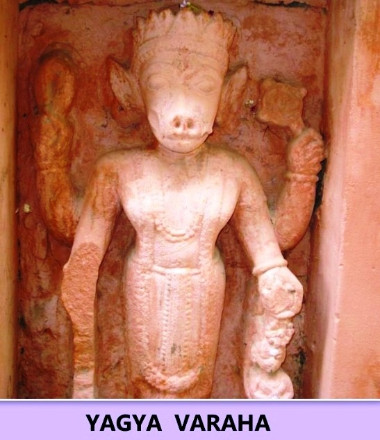
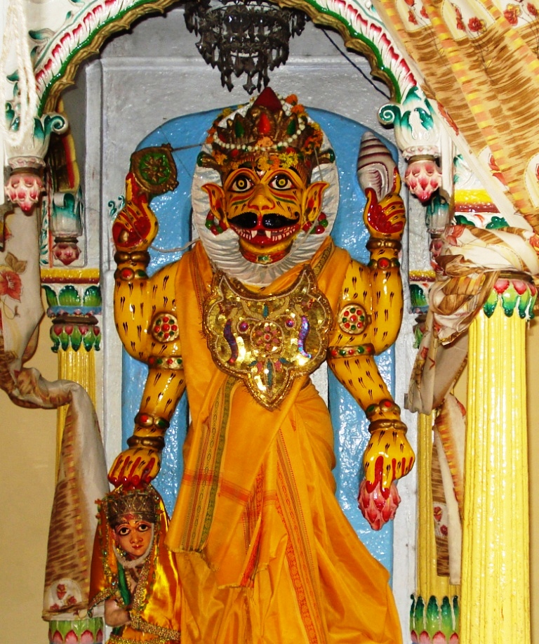
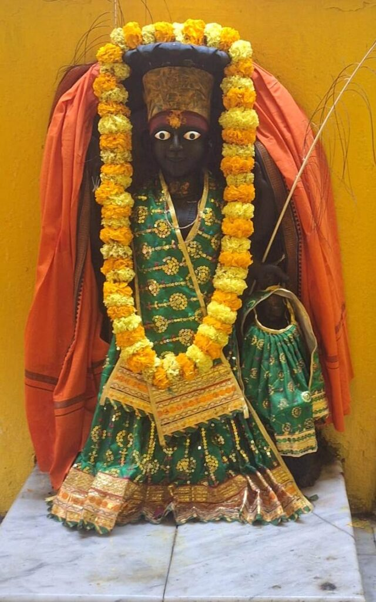
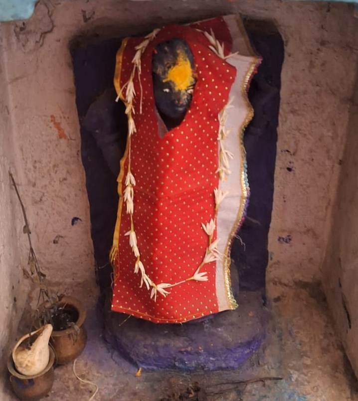
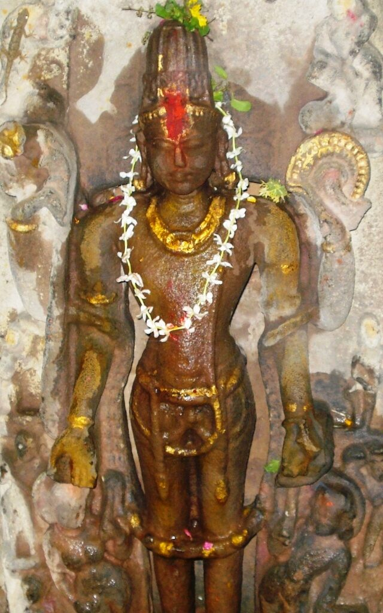
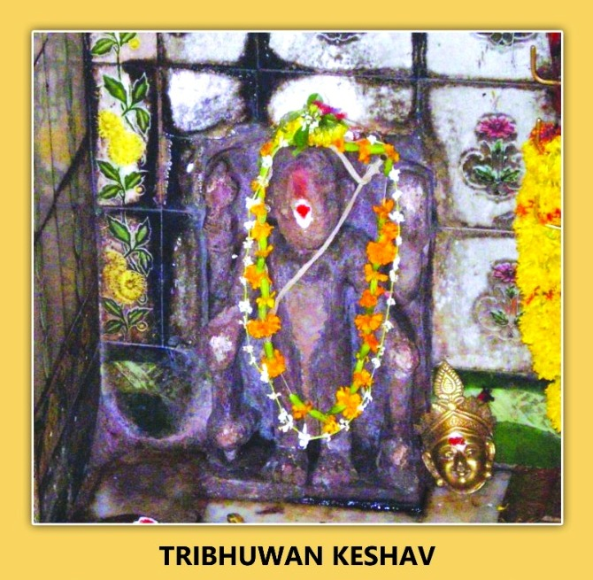
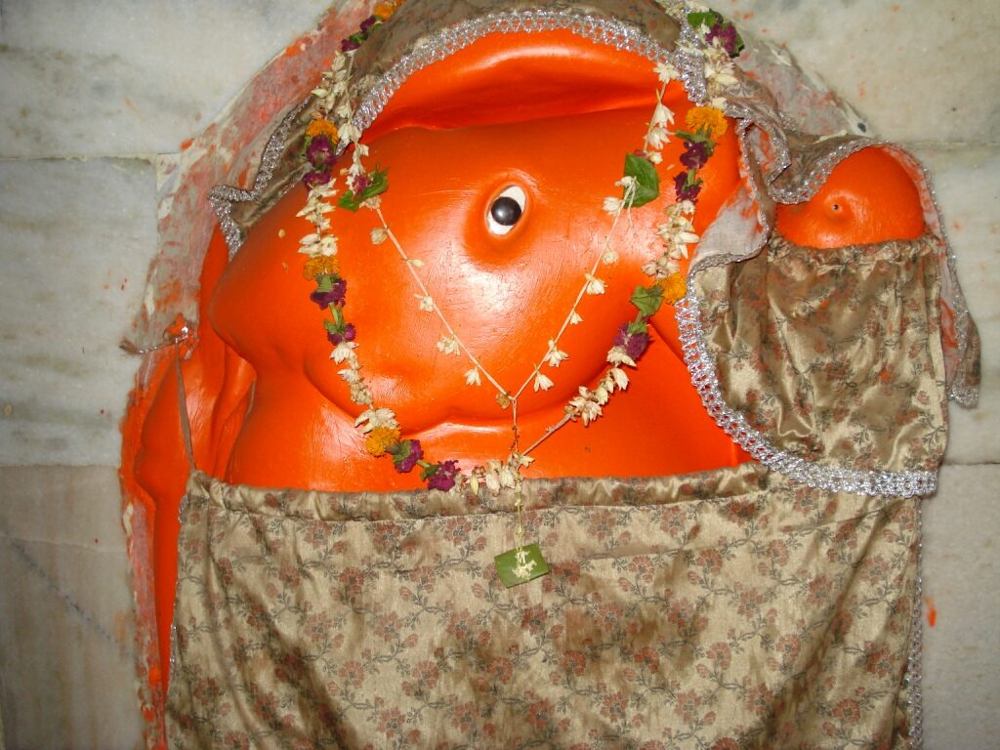
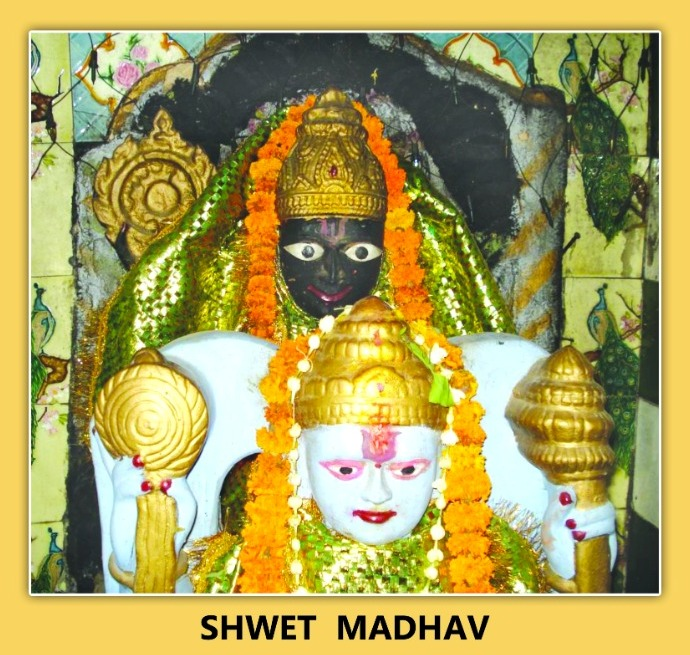

YAGYA VARAHA
Kashi Khand states one Yagya Varaha Teerth where Lord Vishnu is available in the form of Yagya Varaha.

Devotees who worship Yagya Varaha attain the benefits which will normally accrue when Yagya is performed. Here it is worth mentioning that performing any sort of Yagya is a great achievement and the benefits are manifold. Yagya Varaha Teerth is not in existence now.
——————————————————————————————————-
Kashi Khand, Chapter 61, Shlok 17
तीर्थे यज्ञवराहाख्ये यज्ञवाराहसंज्ञक:
नरै: समर्चनीयोऽहं सर्वयज्ञफलेप्सुभि:
(Vishnu Bhagwaan says), Then I am present in the form of Yagya Varaaha at Yagya Varaaha Teerth. Devotees desirous of getting fruits of performing various Yagyas, should worship me in that form.
———————————————————————————————————
LOCATION OF YAGYA VARAHA
Yagya Varaha is located at A.11/30, near Swarleeneshwar at Panch Agni Akhada Ghat. The temple is approachable from Prahalad Ghat Chauraha upto which place, people can travel by Auto or Cycle Rickshaw. Alternatively, they can have a boat ride upto Panch Agni Akhada Ghat and climb the steps.
TYPES OF POOJAS
The temple is open from 06.00 a.m to 9.00 p.m. Aarties are performed at 07.00 p.m.
POOJARIS OF THE TEMPLE
Shri Shankaranand is the poojari of the temple.
VITANK NARSIMHA
Kashi Khand, in Chapter 61, mentions among other forms of Lord Vishnu, one Vitank Narsimha.
Devotees who worship this deity will always be courageous and gain mental strength which is vital for important decision making.
LOCATION OF VITANK NARSIMHA
Vitank Narsimha is located just outside the eastern door of Kedareshwar temple at B.6/102. This door faces the river Ganga. The idol of Vitank Narsimha is located at the steps of Kedar Ghat, on left side. Kedareshwar Temple, Kedar Ghat is a famous place and devotees can reach here by rickshaw, or by boat upto Kedar Ghat (river side).
TYPES OF POOJA
The place of worship is open throughout the day and devotees can worship as per their convenience.
VIDAR NARSIMHA
Lord Vishnu blesses devotees in the form of Vidar Narsimha at the Teerth of the same name.
Devotees who worship Vidar Narsimha will see that all their obstacles are removed and they will be free from any sort of hindrance. The Teerth is not in existence now.

(VIDAR NARSIMHA)
LOCATION OF VIDAR NARSIMHA
Vidar Narsimha is located at A-10/82 Prahlad Ghat. People can approach this place by traveling in a rickshaw upto Birla Hospital after Macchodari and then on foot. Alternatively they can take a boat ride upto Prahlad Ghat and climb the steps.
TYPES OF POOJA
The temple remains open from 04.30 a.m. to 12.00 Noon and from 04.00 p.m. to 09.00 p.m. Narsimha Jayanti is celebrated with great fervour on Vaishakh Shukla Triodashi.
VEER MADHAV
Towards the north of Veereshwar, one can find Lord Vishnu in the form of Veer Madhav.

(VEER MADHAV)
A devotee who observes fast and performs Pooja of Veer Madhav will not face the wrath of Lord Yama. Kashi Khand is succinct in the narration. By the above paragraph, the readers can infer that the devotees who perform pooja of Veer Madhav will reach heaven.
LOCATION OF VEER MADHAV
There are two locations of Veer Madhav. One is near the door of Atma Veereshwar at Ck.7/158 (Rahu’s idol) and other is just opposite at Ck.7/30 where devotees can have darshan through window.
Devotees can reach this place by travelling upto Chowk in a rickshaw and then walking on foot via Sankata Devi temple which is a famous landmark.
TYPES OF POOJA
This place of worship is open throughout and devotees can perform pooja on their own.
VAMAN KESHAV
Lord Vishnu mentions one Vaman Teerth where the Lord is existing in the name of Vaman Keshav.
Devotees who take bath in Vaman Teerth and worship Vaman Keshav will receive blessings of all round happiness. Vaman Teerth is not in existence now.

(VAMAN KESHAV)
LOCATION OF VAMAN KESHAV
Vaman Keshav is located at A.2/29, Trilochan. The temple is also known as Madhusudhan. The temple is approachable from Birla Hospital after Machhodari upto which place, people can travel by Auto or Cycle Rickshaw. Alternatively, they can have a boat ride upto Trilochan Ghat and climb the stairs. This deity is known by the name of Madhusudan. On Akshay Triteeya Day, many devotees worship this deity and they make offering of butter to the Lord.
TYPES OF POOJA
The temple is open from 05.30 a.m. to 01.00 p.m. and from 03.00 p.m. to 09.00 p.m.
VAIKUNTH MADHAV
Towards the east of Vairochaneshwar, Lord Vishnu is present in the form of Vaikunth Madhav.

(VAIKUNTH MADHAV)
Devotees who worship this Lord with utmost devotion will derive the benefit of worshipping Lord Vishnu in Vaikunth. The implied meaning is that, after death, the devotee will reach Vaikunth (abode of Lord Vishnu).
LOCATION OF VAIKUNTH MADHAV
Vaikunth Madhav is located at Ck.7/165, near Harish-chandreshwar, Scindia Ghat. Devotees can reach this place by travelling upto Chowk in a rickshaw and then walking on foot via Sankata Devi temple which is a famous landmark.
TYPES OF POOJA
The deity is open for worship throughout. Devotees can perform pooja on their own.
TRIVIKRAMA
Towards the north of Trilochan, Lord Vishnu is present in the form of Trivikrama.
Devotees worshipping this Lord will be blessed with Lakshmi and their sins will be cleansed away. By Lakshmi, readers may infer wealth and prosperity.

(TRIVIKRAMA)
——————————————————————————————————-
Kashi Khand, Chapter 61, Shlok 200
त्रिविक्रमोऽस्म्यहं काश्यामुदीच्यां च त्रिलोचनात्
ददामि पूजितो लक्ष्मीं हरामि वृजिनान्यपि
(Vishnu Bhagwan says) I am positioned in the form of Trivikram in north of Trilochan. I grant Lakshmi (prosperity) to devotees who worship me there and the sins of such devotees are destroyed by me.
———————————————————————————————————
LOCATION OF TRIVIKRAMA
Trivikrama is located at A-2/80, Trilochaneshwar Temple. Above the idol, it has been mentioned as Brihaspati. The temple is approachable from Birla Hospital after Machhodari upto which place, people can travel in Auto or Cycle Rickshaw. Alternatively, they can have a boat ride upto Trilochan Ghat and climb the stairs.
TYPES OF POOJAS
The temple is open for worship 05.30 a.m. to 12.00 noon and 05.00 p.m. to 11 p.m. Mangala Aarti is performed at 05.30 a.m. and Shayan Aarti at 11.00 p.m. For doing special pooja etc., it is advisable to consult the Poojari before hand.
POOJARIS OF THE TEMPLE
Pandit Girija Shankar Pandey is the Poojari of the temple and he can be contacted in his Cell number (0)9236511267 for doing any special pooja.
TRIBHUWAN KESHAV
In Tri Lok Sundari Vandi Devi’s South Kashi, Lord Vishnu is present in the form of Tribhuwan Keshav. (Kashi Khand mentions this as Bhuwan Keshav).
Devotees who worship Tribhuwan Keshav will not see womb again, meaning thereby that there will be no rebirth.
——————————————————————————————————-
Kashi Khand, Chapter 61, Shlok 26
वन्ध्यास्त्रिलोकसुन्दर्या याम्यां यो मां समर्चयेत्
काश्यां ख्यातं त्रिभुवनकेशवं न स गर्भभाक्
(Lord Vishnu says) In Kashi to the south of Trilokya Sundari Bandi Devi, I am famous by the name Tribhuvan Keshav. The devotee who worships me here does not get rebirth. (That means he gets salvation).
———————————————————————————————————

LOCATION OF TRIBHUWAN KESHAV
Tribhuwan Keshav is located at D.17/100, Bandi Devi, Dasaswamedh Ghat. Just before the Ghat, devotees should take a right turn. It is advisable to enquire at the vegetable market just before the Ghat. The temple priest calls this deity by the name of Dharani Varaha. There is some confusion as some learned Pundits claim that Dharani Varaha is located at D.17/111, Ram Mandir and they give the name of Prayag Madhav for this.
Kashi Khand mentions South Kashi. If we take the Mukti Kshetra of Kashi as per Kashi Khand, Madhyameshwar is the mid point and Dasaswamedh Ghat falls to the South. However, in the present day scenario Dasaswamedh is the center point for various religious and cultural activities.
There is also a Shiv Ling in the temple premises which was called Prayageshwar by the Poojari.
TYPES OF POOJA
The temple remains open from 08.00 a.m. to 11.00 a.m. However, devotees can have darshan through grilled door throughout.
TAMRA VARAHA
Lord Vishnu is present in the form of Tamra Varaha. This Varaha has come from Tamara Dweep.

(TAMRA VARAHA)
By worshipping Tamra Varaha, devotees will see their wishes and desires fulfilled.
LOCATION OF TAMRA VARAHA
Tamra Varaha is located outside House No.Ck.33/57, Neelkanth Mohalla in the slope. Devotees can travel upto Chowk in a rickshaw and walk on foot upto Neelkanth temple which is a famous landmark. Another landmark is Adi Chunchungiri Mutt of Karnataka.
TYPES OF POOJA
This place of worship is open throughout and devotees can perform pooja on their own.
Please watch our YouTube Video about Tamra Varaha at following Link
https://www.youtube.com/watch?v=Lb8jw8j5LEw&t=9s
SHWET MADHAV
Kashi Khand mentions Lord Vishnu in the form of Shwet Madhav in the vicinity of Vishalakshi Devi.
Devotees who worship Shwet Madhav will attain the status equivalent to the Lord.

LOCATION OF SHWET MADHAV
Shwet Madhav is located at D.3/71, Big Hanuman temple at Mir Ghat. The deity is located in side the temple premises, exactly opposite Hanuman idol. Devotees can reach this place by traveling upto Dasaswamedh in a rickshaw and then on foot. Alternatively, they can take a boat ride upto Mir Ghat and climb the steps.
TYPES OF POOJA
The temple is open from 07.00 a.m. to 01.00 p.m. and from 04.00 p.m. to 09.00 p.m. Aarties are held in the morning and evening.
POOJARIES OF THE TEMPLE
Shri Rajeshwar Prasad is the poojari of the temple.